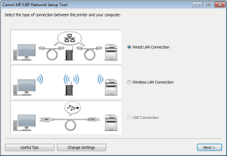
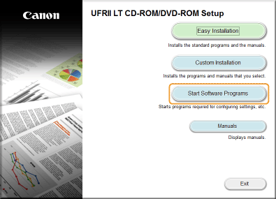
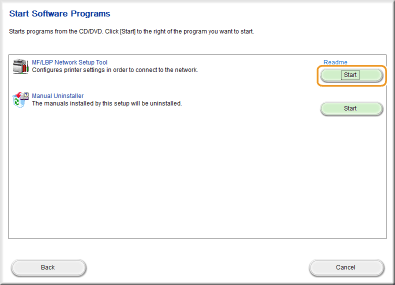
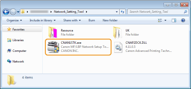

0JJ7-00R
The MF/LBP Network Setup Tool is a utility that allows you to configure initial network settings by following instructions on the screen. The Tool starts automatically when you install a printer driver from the User Software CD-ROM/DVD-ROM. If you want to start it alone manually, you can start it from the User Software CD-ROM/DVD-ROM or start it directly from a file downloaded from the Canon website.

|
|
|
The system environment required to use the MF/LBP Network Setup Tool is the same as the system environment required for the printer driver. System Requirements
See Configuring Wireless LAN Network Settings for information about how to configure initial network settings by using the MF/LBP Network Setup Tool.
|
1
Log on to the computer with an administrator account.
2
Insert the User Software CD-ROM/DVD-ROM into the drive on the computer.
3
Click [Start Software Programs].


If the above screen does not appear Displaying the [CD-ROM/DVD-ROM Setup] Screen
If [AutoPlay] is displayed, click [Run MInst.exe].
4
Click [Start] of [MF/LBP Network Setup Tool].

The MF/LBP Network Setup Tool is included among the files that you download to install a printer driver. Start by downloading the printer driver file, which contains the printer driver and associated files, from the Canon website (http://www.canon.com/).
1
Unzip the downloaded file.
2
Double-click "CNAN1STK.exe" in the [Network_Setting_Tool] folder.
